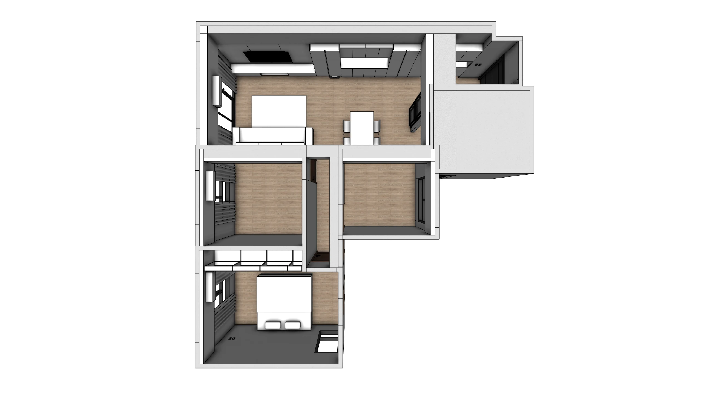
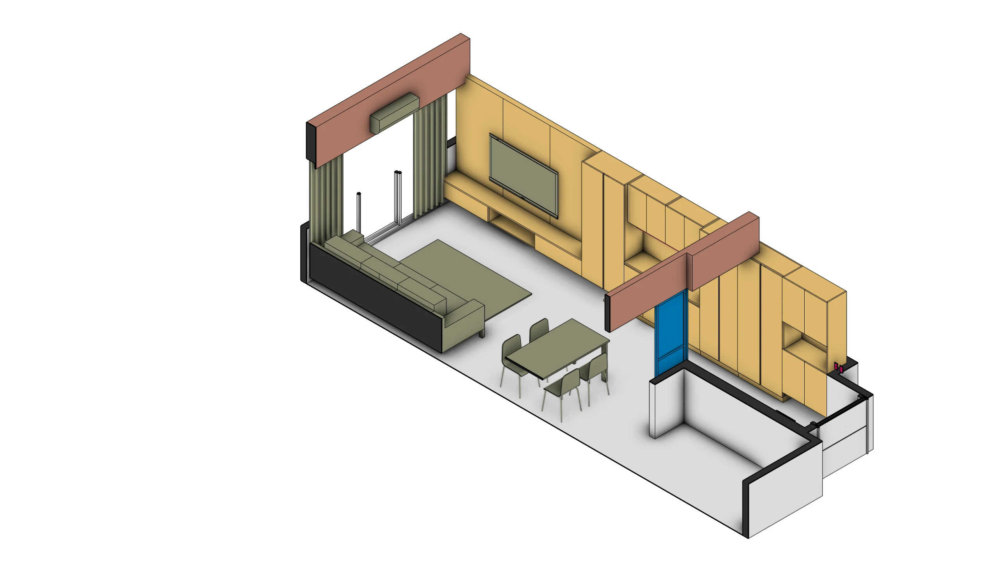
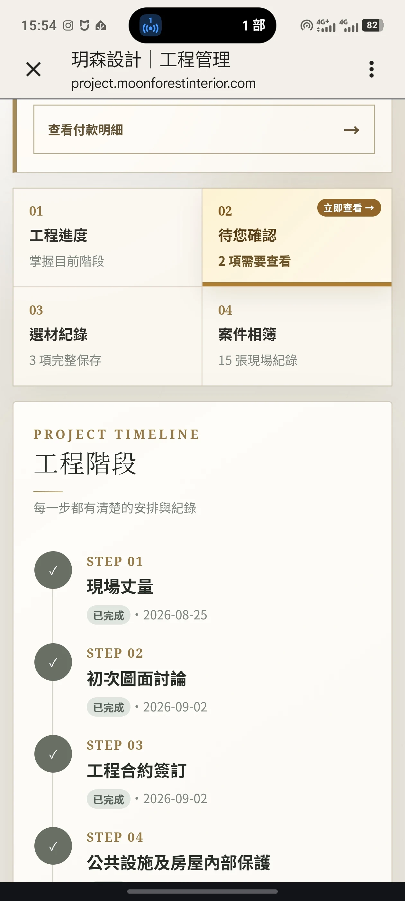

設計不複雜，不代表可以說得含糊
這次的工程以住宅局部裝修為主，沒有特別追求誇張的造型，也不是把每個房間都做滿。主要工作是依照屋主實際生活，重新整理玄關、客餐廳、主臥、櫃體、天花、水電與既有設備之間的關係。
但只要牽涉不同工種，就不只是「這裡做一個櫃子」這麼單純。櫃體會遇到插座、設備散熱、開關位置與天花收邊；玄關的分區方式會同時影響動線與客廳視線。工程可以單純，工種間的關係不會因此消失。
不是先問要做哪一種風格，而是先確認屋主每天會怎麼用、哪些地方值得投入，以及哪些空間現在先保留彈性。
畫圖以前，先記住屋主真正在意的事
這次屋主說的不是抽象風格名稱，而是幾個很具體的生活條件：
- 希望東西儘量收起來，但常用的餐用電器不能每次搬進搬出。
- 插座要足夠，而且要跟著實際使用位置走，不要入住後再用延長線補救。
- 玄關與客廳要有界線，但不希望把公共空間切得太零碎。
- 次臥當下不用急著做滿，因為將來的使用方式還會改變。
這些條件會直接變成配置順序：先處理每天使用的公領域；電器、插座與散熱條件先定位，再當櫃體；預算放在常用與必要的地方，還沒有確定用途的房間不先用固定裝修塞滿。

用色塊，讓屋主一眼看見這次要做什麼
平面圖能交代方位，但第一次裝修的屋主，不一定能立刻從圖面想像櫃體高度、天花範圍、家具比例與動線。這次提案使用 MoonBlock 空間預演，把全屋、客餐廳與主臥分別做成軸測與四向視角。
色塊在這裡不是裝飾，而是溝通工具。不同顏色對應不同性質的內容，讓屋主能快速看出櫃體、天花、設備、既有結構與保留空間的關係。比起現場操作複雜的建模軟體，HTML 提案可以直接在 MacBook 上切換空間與視角，把討論焦點留在設計本身。

這一階段不急著把材質與風格說成定案。先確認空間骨架、工程範圍與取捨，細部才有正確的發展基礎。
方向確認後，圖面不是在報價階段重做一次
圖面確認後，這次施作內容會再依空間與工種整理成報價。屋主看到的是清楚、可以逐項核對的報價單；同一份資料再轉成工班施工需要的量單，不需要另外靠記憶重新整理。
這一案也是玥森自建報價流程第一次完整進入實際案件：將已經整理的資料導入後，修改、輸出、屋主報價與工班量單都來自同一組內容。對設計端來說，最直接的價值是不再擔心某個已討論的項目，在轉抄過程中被遺漏。
它應該承接前面確認過的空間與施作內容，並讓屋主、設計端與工班後續都能回到同一組資料。
簽約之後，把工程進度交給屋主看
這次是在簽約後，才將專屬的工程進度頁面給屋主看。屋主當下有些驚訝，因為他們原先並不知道，簽約後還會有這樣一個空間，可以查看案件現況。

後續的工程進度、現場照片與待確認事項，會集中在同一個專案裡。屋主不需要從一長串聊天訊息裡猜現在做到哪裡；設計端也不用另外維護一份只有自己看得懂的紀錄。
對內部來說，所有剛進來的現場資料可以先集中到「待分類」，之後再透過網站統一重新命名、加上關鍵字與分類，同時整理 NAS 上的原始檔案。當下先把資料收進來，之後再有系統地歸位，比忙碌時先猜每張照片要放哪裡更不容易遺失。
小案子也做完整，不是為了把流程變複雜
專案管理不應該只有大型案件才需要。小案子同樣會有工種交接、尺寸確認、材料選擇、追加減與現場照片；差別只在項目數量，不在於是否需要說清楚。
這次真正被驗證的，不是一張特別華麗的圖，而是一條工作流：
- 從屋主真正的生活需求開始。
- 用立體圖面與色塊確認配置和工程範圍。
- 將已確認的內容連到報價與工班量單。
- 簽約後，持續讓屋主看見進度與待確認事項。
- 把現場資料命名、分類並與 NAS 檔案對齊。
流程的目的不是表現自己做了多少工具，而是減少每個人各自記著一個版本。當屋主、設計端與工班都能找到同一份依據，小案子才不會因為「看起來很單純」，反而把該確認的事情略過。
設計可以很克制，工作不必因此簡化
這一案不以複雜造型為目標，而是把預算放在屋主每天會使用的地方，並保留未來調整的空間。同時，不因為工程規模較小，就省略提案、報價與簽約後管理中該有的確認。
如果你正在準備台中新成屋或住宅翻修，可以先整理案場地區、屋況、坪數、預計入住時間、預算方向與現有平面圖，我們先一起釐清需求與合作範圍。
LINE 初步聊聊